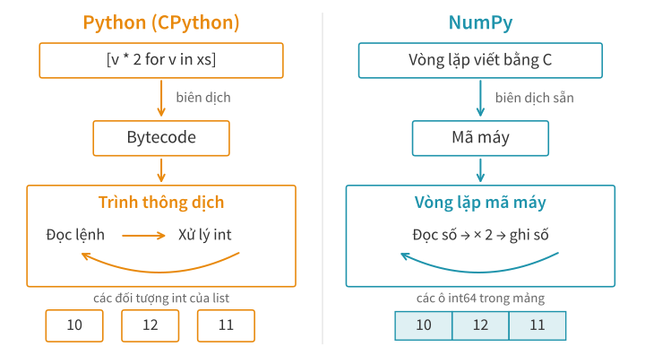
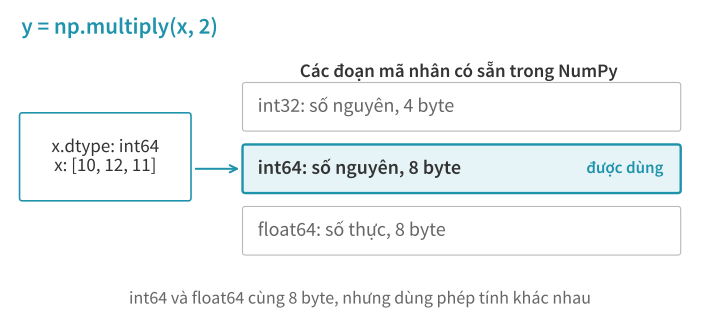
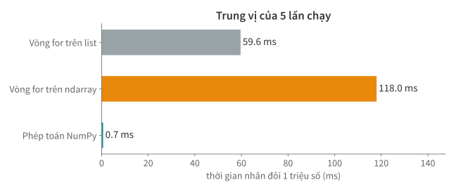
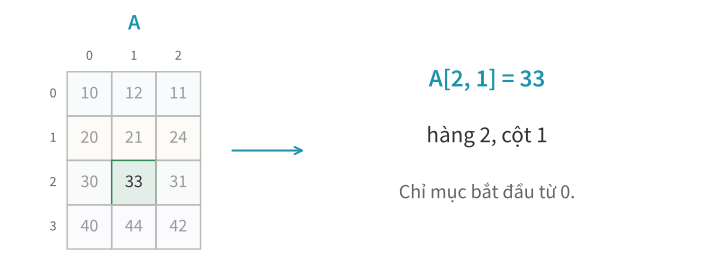
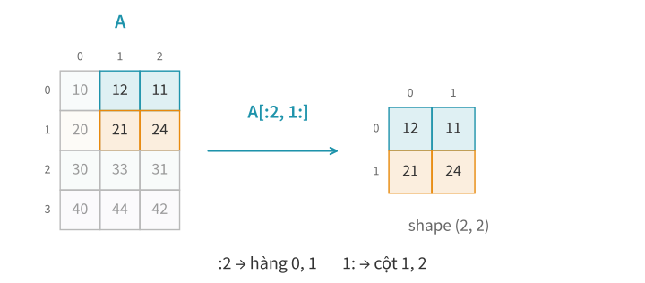
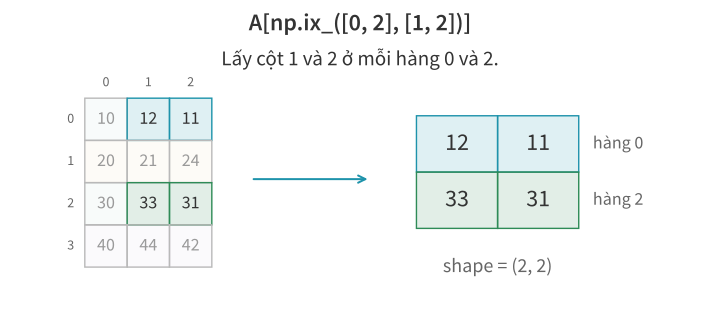
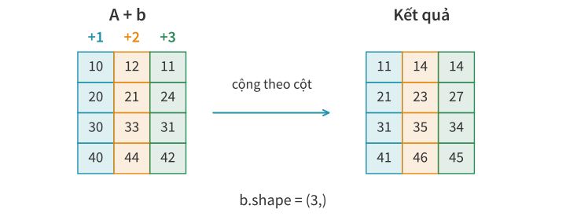
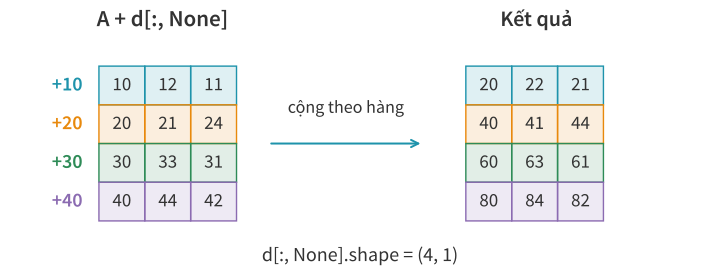
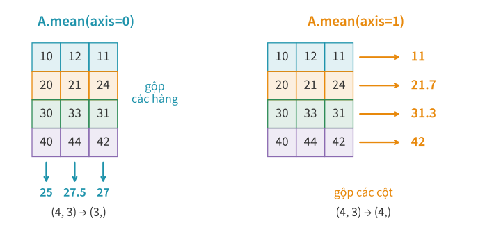

Lập trình
xử lý dữ liệu
Học kì 1, năm học 2026–2027
Viện Trí tuệ nhân tạo, Trường ĐH Công nghệ, ĐHQGHN
Bài 3
NumPy: mảng và
tư duy vector hoá
Bài trước
Vòng for và comprehension xử lý từng phần tử.
Với một triệu số cần nhân đôi, công việc nào phải lặp lại một triệu lần?
Bài này tìm hiểu cách NumPy tổ chức dữ liệu và thực hiện phép tính trên cả mảng.
Tổng quan
- Cấu trúc mảng NumPy
- Vì sao NumPy tính nhanh?
- Chỉ mục và lát cắt
- Vector hoá và broadcasting
- Thống kê và mô phỏng ngẫu nhiên
- Làm việc với AI thì sao?
1.
Cấu trúc mảng
NumPy
Cách lưu dữ liệu quyết định ta có thể tính toán như thế nào?
Cách lưu dữ liệu của list và ndarray

Mảng hai chiều trong bộ nhớ

shape và dtype.Tính dung lượng từ cách lưu mảng
A có 4 hàng, 3 cột; mỗi số int64 chiếm 8 byte.
Phần dữ liệu cần: 4 × 3 × 8 = 96 byte.
| Kiểm tra bằng NumPy | Kết quả |
|---|---|
A.itemsize: byte mỗi phần tử | 8 |
A.nbytes: byte của tất cả phần tử | 96 |
Đổi shape từ (4, 3) sang (2, 6) có làm giảm dung lượng dữ liệu không?
Chưa tính metadata: thông tin mô tả mảng.
So sánh dung lượng bộ nhớ

Kích thước cố định có giới hạn gì?
int8 dùng 1 byte, chỉ lưu số nguyên từ −128 đến 127. Cộng thêm 1 vào 127 sẽ ra sao?
x8 = np.array([127], dtype=np.int8)
print(x8 + 1)
[-128]
Kết quả bị tràn số. Cần đổi kiểu trước phép cộng:
print(x8.astype(np.int16) + 1)
[128]
Ít byte hơn, độ chính xác thấp hơn
Số byte cố định cũng giới hạn độ chính xác của số thực.
| Giá trị | Byte | Chuỗi hiển thị |
|---|---|---|
| 1/3 trong toán học | — | 0.333333333333… |
float32 | 4 | 0.333333343267 |
float64 | 8 | 0.333333333333 |
Cả hai lưu gần đúng 1/3; phần màu cam cho thấy sai lệch của float32. float64 dùng gấp đôi bộ nhớ, lưu giá trị gần 1/3 hơn.
Cùng in 12 chữ số sau dấu chấm để so sánh. In nhiều chữ số không có nghĩa là chính xác hơn.
Bài tập 1: tính dung lượng mảng
Một mảng có 1.000.000 hàng, 3 cột.
Mỗi phần tử float64 chiếm 8 byte; float32 chiếm 4 byte.
- Nếu dùng
float64, mảng có bao nhiêu byte dữ liệu? - Nếu dùng
float32, tiết kiệm được bao nhiêu byte?
Chỉ tính phần dữ liệu. Tiết kiệm bộ nhớ đã đủ để quyết định chọn float32 chưa?
2.
Vì sao NumPy
tính nhanh?
Vẫn phải nhân từng số. Phần công việc nào có thể giảm?
Nhân các phần tử với 2
xs = [10, 12, 11]
print([value * 2 for value in xs])
[20, 24, 22]
x = np.array(xs, dtype=np.int64)
print(x * 2)
[20 24 22]
Hai cách cho cùng giá trị. Cách nào giảm công việc Python phải làm ở mỗi lượt?
Python xử lý từng đối tượng số

Ufunc là gì?
ufunc (universal function) là hàm NumPy áp dụng một phép toán lên từng phần tử.
print(np.multiply(x, 2))
[20 24 22]
x * 2 tương đương np.multiply(x, 2): nhân mỗi phần tử của x với 2.
Thông dịch và biên dịch

NumPy chọn mã tính toán theo dtype

Vòng lặp bên trong NumPy

Các phần tử liền nhau và cache

SIMD: xử lý nhiều số cùng lúc
SIMD (Single Instruction, Multiple Data): một lệnh máy thực hiện cùng thao tác trên nhiều số.
| Cách xử lý | Minh hoạ nhân với 2 |
|---|---|
| Từng số | 10 → 20, rồi 12 → 24, … |
| Theo nhóm | [10, 12, 11, 20]↓ × 2 [20, 24, 22, 40] |
Một lõi CPU cũng có thể dùng SIMD. Không cần chia việc cho nhiều lõi.
NumPy tự chọn mã phù hợp với CPU. Việc dùng SIMD còn tuỳ phép toán, dtype, độ dài và cách bố trí mảng.
Khi nào dùng nhiều luồng?
x * 2: thường một luồng, có thể dùng SIMD.A @ B(nhân ma trận số thực): có thể dùng nhiều luồng, tuỳ thư viện và cấu hình.
NumPy vẫn có thể nhanh hơn vòng for Python khi chỉ dùng một luồng.
So sánh tốc độ tính toán

Bài tập 2: so sánh ba cách nhân đôi
xs là list số nguyên; x là mảng int64 chứa cùng các giá trị.
a = [v * 2 for v in xs]
b = [v * 2 for v in x]
c = x * 2
- Cách nào vẫn chạy vòng lặp trong Python?
- Vì sao thay
xsbằngxở cách thứ hai chưa chắc làm chương trình nhanh hơn? - Dùng notebook đo cả ba cách với 10 phần tử và 1 triệu phần tử. Thứ tự nhanh, chậm có thay đổi không?
3.
Chỉ mục và lát cắt
Chọn phần tử, lấy lát cắt và phân biệt view với bản sao.
Chọn một phần tử

Từ chỉ mục đến ô nhớ
![A[2,1] là 33, cách đầu vùng dữ liệu 56 byte: hai bước hàng 24 byte và một bước cột 8 byte.](img/lecture-03/strides-addressing.svg?v=4)
Lấy một phần mảng
Mỗi chiều dùng lát cắt start:stop:step, không lấy stop. Bỏ trống là lấy từ đầu hoặc đến cuối; bước mặc định là 1.

Lấy một phần mảng có cần sao chép?

Sửa view, mảng gốc cũng đổi
B = A.copy()
V = B[:2, 1:]
V[0, 0] = 999
print(B[0])
[ 10 999 11]
V[0, 0] và B[0, 1] chỉ cùng một ô dữ liệu. Nếu cần sửa V mà giữ nguyên B, phải thay đổi cách tạo V thế nào?
View bỏ qua các ô bằng cách nào?
![A[:,::2] chọn cột 0 và 2, tạo view shape (4,2), strides (24,16).](img/lecture-03/strided-view.svg?v=5)
Bài tập 3: tìm vị trí phần tử
A.shape = (4, 3), A.strides = (24, 8) (byte).

A[1, 2]cách đầu vùng dữ liệu bao nhiêu byte?- Phần tử cách đầu vùng dữ liệu 80 byte có giá trị và chỉ mục nào?
- Tạo
B = A.astype(np.int32). Mỗi số còn 4 byte.B.stridesbằng bao nhiêu?
Bài tập 4: xác định các ô của view
A = np.array([[10, 12, 11],
[20, 21, 24],
[30, 33, 31],
[40, 44, 42]], dtype=np.int64)
V = A[::2, 1:]
- Viết các giá trị của
VvàV.shape. - Tính
V.strides. Ô đầu củaVcách đầu vùng dữ liệu củaAbao nhiêu byte? - Gán
V[1, 0] = 999sẽ đổi ô nào củaA? Giải thích bằng vị trí trong bộ nhớ.
Chuyển vị không di chuyển dữ liệu

A.T[i, j] chính là A[j, i].Đổi shape có phải chuyển dữ liệu?
A có 12 phần tử. Dùng reshape để đọc thành 2 hàng, 6 cột:
R = A.reshape(2, 6)
print(R)
[[10 12 11 20 21 24]
[30 33 31 40 44 42]]
R.shape = (2, 6), R.strides = (48, 8): mỗi hàng nay có 6 số, nên bước hàng là 48 byte.
Ở đây, chỉ thay cách đọc cùng dãy số; R dùng chung dữ liệu với A. Nếu cách bố trí không phù hợp, reshape có thể phải sao chép.
Lọc phần tử bằng điều kiện
![A % 2 == 0 đánh dấu các số chẵn; A[mask] trả về [10,12,20,24,30,40,44,42], shape (8,).](img/lecture-03/boolean-selection.svg?v=2)
Chọn bằng hai mảng chỉ mục
![Ghép hàng 0 với cột 1 được 12; ghép hàng 2 với cột 2 được 31. Kết quả [12,31].](img/lecture-03/index-pairs.svg?v=2)
Chọn các hàng và cột với np.ix_

Phân biệt view và bản sao
B = A.copy()
V = B[:, 1:3] # lát cắt: view
C = B[:, [1, 2]] # mảng chỉ mục: bản sao
C[0, 0] = -9
V[0, 0] = -1
B[0] có những giá trị nào sau đoạn code này?
Lấy dữ liệu bằng mảng chỉ mục hoặc mask tạo bản sao. Lát cắt cơ bản tạo view.
4.
Broadcasting
Tính toán với các mảng khác shape.
Cộng vào từng cột
Cột 0 cộng 1, cột 1 cộng 2, cột 2 cộng 3.
b = np.array([1, 2, 3])
ket_qua = np.empty_like(A)
for i in range(4):
for j in range(3):
ket_qua[i, j] = A[i, j] + b[j]
Sang hàng tiếp theo, vẫn dùng ba số trong b.
Viết phép cộng trên cả mảng

Broadcasting cho phép tính với các mảng khác shape bằng cách dùng lại phần tử: ở đây (4, 3) + (3,).
Cộng vào từng hàng
Hàng 0 cộng 10, hàng 1 cộng 20, hàng 2 cộng 30, hàng 3 cộng 40.
d = np.array([10, 20, 30, 40])
d_cot = d[:, None] # thêm một chiều: (4,) → (4, 1)
d | d_cot |
|---|---|
[10 20 30 40] | [[10] |
Mỗi hàng dùng một số

(4, 3) + (4, 1): số duy nhất trong mỗi hàng của d_cot được dùng cho cả ba cột.
Quy tắc broadcasting
Đặt các shape thẳng về bên phải rồi so sánh từng chiều:
| Hàng | Cột | |
|---|---|---|
A | 4 | 3 |
b | thiếu → coi là 1 | 3 |
d_cot | 4 | 1 |
- Kích thước bằng nhau: ghép tương ứng.
- Một bên bằng 1: dùng lại theo chiều đó.
- Các trường hợp khác: không ghép được.
Vì sao A + d bị lỗi?
A.shape (4, 3)
d.shape (4,)
↑
3 không khớp 4
NumPy ghép từ chiều cuối, không tự đoán rằng bốn số là dành cho bốn hàng.
A + d[:, None] # (4, 3) + (4, 1)
Giữ chiều khi lấy một cột
Để cộng số đầu mỗi hàng vào cả hàng đó:
| Cách lấy | Shape | Cộng với A |
|---|---|---|
A[:, 0] | (4,) | Không khớp |
A[:, 0:1] | (4, 1) | Đúng theo hàng |
ket_qua = A + A[:, 0:1]
Bài tập 5: cộng theo hàng và cột
Cho mảng A có 4 hàng, 3 cột. Tạo B qua hai bước:
- Từ
A, cộng lần lượt 1, 2, 3 vào các cột 0, 1, 2. - Trên kết quả vừa tính, cộng lần lượt 10, 20, 30, 40 vào các hàng 0, 1, 2, 3.
Ví dụ: B[0, 1] = A[0, 1] + 2 + 10.
- Viết code NumPy không dùng
for. Ghi shape các mảng dùng để cộng. - Với
A[0] = [10, 12, 11], tínhB[0].
5.
Thống kê và
lấy mẫu ngẫu nhiên
Mô tả giá chỗ ở và lấy mẫu để kiểm tra dữ liệu.
Mô tả mức giá chỗ ở
Giá mỗi đêm của 5 chỗ ở, đơn vị USD. Dữ liệu giả lập.
| Giá | Trung bình | Trung vị |
|---|---|---|
[40, 50, 60, 70, 80] | 60 | 60 |
[40, 50, 60, 70, 380] | 120 | 60 |
Một chỗ ở giá cao kéo trung bình lên 120 USD; bốn chỗ còn lại đều dưới mức này.
Trong báo cáo bài tập lớn, dùng số nào để mô tả mức giá điển hình?
Độ phân tán của giá
Hai khu vực, mỗi nơi 4 chỗ ở. Giá USD/đêm, giả lập.
| Khu vực | Giá | Trung bình | Độ lệch chuẩn |
|---|---|---|---|
| X | [60, 60, 60, 60] | 60 | 0 |
| Y | [30, 30, 90, 90] | 60 | 30 |
Ở Y, mỗi giá cách trung bình 30 USD. Báo cáo chỉ ghi “trung bình 60 USD” sẽ bỏ mất chênh lệch này.
np.var([30, 30, 90, 90]) # 900 (USD²)
np.std([30, 30, 90, 90]) # 30 (USD)
Tính trung bình theo hàng và cột
Giả sử A là giá USD/đêm: 4 chỗ ở × 3 kỳ thu thập. Dữ liệu giả lập.

Trừ trung bình của từng hàng
Mỗi giá lệch bao nhiêu so với giá trung bình của chính chỗ ở đó?
tb_hang = A.mean(axis=1, keepdims=True)
print(tb_hang.shape)
(4, 1)
chenh_lech = A - tb_hang
print(chenh_lech.round(2))
[[-1. 1. 0. ]
[-1.67 -0.67 2.33]
[-1.33 1.67 -0.33]
[-2. 2. 0. ]]
keepdims=True giữ chiều 1 để ghép đúng hàng: (4, 3) − (4, 1).
Bài tập 6: sửa phép trừ
Mỗi phần tử cần trừ đi trung bình của hàng chứa nó.
Ví dụ: hàng [10, 12, 11] có trung bình 11 → kết quả [-1, 1, 0].
M = np.array([[10, 12, 11],
[20, 21, 24],
[30, 33, 31]])
tb = M.mean(axis=1)
chenh_lech = M - tb
Code chạy được nhưng tính sai. Hãy sửa và giải thích lỗi.
Lấy mẫu để kiểm tra dữ liệu
Dữ liệu của bài tập lớn có nhiều dòng. Thay vì chỉ xem các dòng đầu, chọn ngẫu nhiên một số dòng để kiểm tra.
# Ví dụ nhỏ: 5 giá giả lập, USD/đêm
gia = np.array([40, 50, 60, 70, 380])
rng = np.random.default_rng(42)
chi_muc = rng.choice(len(gia), size=3, replace=False)
print(gia[chi_muc])
# [380 40 70]
replace=False: mỗi dòng được chọn tối đa một lần.
Diễn giải kết quả từ mẫu
Vẫn dùng 5 giá giả lập ở slide trước:
| Dữ liệu | Giá trung bình (USD) |
|---|---|
| Cả 5 giá | 120 |
| 3 giá lấy với seed 42 | 163,33 |
| 3 giá lấy với seed 7 | 170 |
Lấy mẫu ngẫu nhiên vẫn có sai số. Đổi seed có thể đổi kết quả.
Với bài tập lớn, hãy tính thống kê trên toàn bộ dữ liệu hợp lệ khi có thể; dùng mẫu để đọc và kiểm tra từng dòng.
Tổng kết
- Cách lưu dữ liệu quyết định chi phí và giới hạn của phép tính.
- Vector hoá bắt đầu từ quan hệ giữa các phần tử, rồi mới chọn hàm.
- Code chạy được chưa chứng minh nó tính đúng điều ta muốn.
- Thống kê cần được diễn giải theo dữ liệu và cách lấy mẫu.
Làm việc với AI thì sao?
Kiểm chứng thế nào?
- Đúng kết quả? So với phép tính tay hoặc vòng for trên mảng nhỏ.
- Đúng cơ chế? Kiểm tra shape, dữ liệu dùng chung và dữ liệu bị sửa.
- Đúng kết luận? Đo tốc độ; kiểm tra giả định của mô phỏng.
Yêu cầu AI nêu trường hợp có thể sai, rồi tự kiểm tra.
Đọc thêm
- McKinney, Python for Data Analysis, chương 4: mảng, truy cập bằng chỉ mục và phép toán vector hoá.
- Tài liệu NumPy: SIMD, nhiều luồng, broadcasting, copy và view, ufunc.
- 📖 Tự học: chọn một ví dụ trong §4.2–4.7 của McKinney. Chạy thử, giải thích shape đầu vào và đầu ra.